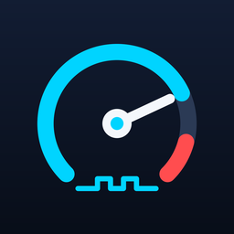

PWC ScanLive data, a dashboard, and fault codes for your Kawasaki PWC.
Plug a cable into the ski's diagnostic port and watch RPM, throttle, intake pressure, temperatures and battery voltage as you ride — on live gauges, a chart, or an at-a-glance dashboard. Read fault codes, log every run to CSV, and use the built-in PID scanner to find sensors the app doesn't already know about.
Free and open source (source code on GitHub). Works on Windows 10 and 11.
You're on a phone. This app runs on a Windows computer, so open this page on your PC to download it.
What's in the app
Live data + dashboard
Gauge tiles for every channel, a shared chart, and a garage-ready dashboard with warning/redline zones for revs, temp, battery and throttle.
Fault codes
Reads current faults as the service codes your dash shows, with what they mean, likely causes, and which ECU pins to check.
PID scanner
Finds sensors the built-in channel list doesn't already know about, and helps you figure out what each one measures.
Logging
Records every ride to CSV with raw bytes included, so a log can be re-scaled later if a formula turns out wrong.
What you need
- A Windows 10 or 11 computer
- A USB OBD2 cable with K-line support The blue KKL 409.1 cable with an FTDI chip works. It's often sold as a VAG or VCDS cable.
- A Kawasaki 4-pin to OBD2 adapter Connects the cable to the ski's diagnostic plug.
- A charged battery in the ski
Installing
- Download the installer Click Download for Windows. If your browser asks whether to keep the file, choose Keep.
- Open it Double-click PWCScan-Setup.exe in your Downloads folder.
- Get past the Windows warning
Windows may show a blue box that says Windows protected your PC. This is normal for new programs from small developers. Click More info, then Run anyway.
- Finish Click Next through the installer. When it's done, PWC Scan has an icon on your desktop.
Connecting to your ski
- Plug the USB cable into your computer. Windows sets it up on its own, which can take a minute the first time.
- Connect the adapter to the ski's diagnostic plug, then the cable to the adapter.
- Turn the key on or press start so the ski's computer wakes up.
- Open PWC Scan and press Connect. The light turns green when it's reading data.
Want to look around first? Pick Demo in the Cable list to try the app without a ski.
Stuck? Get in touch. PWC Scan is free under the MIT license. Not affiliated with or endorsed by Kawasaki.